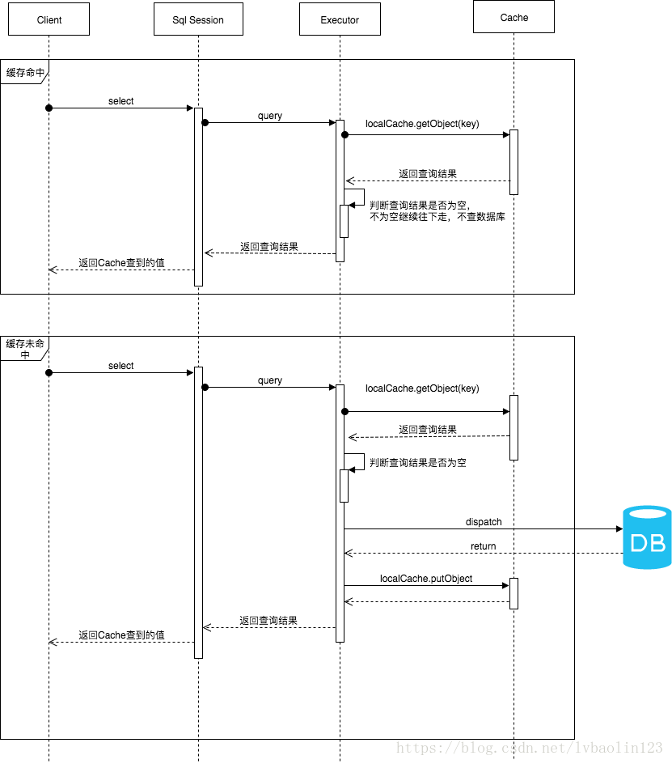
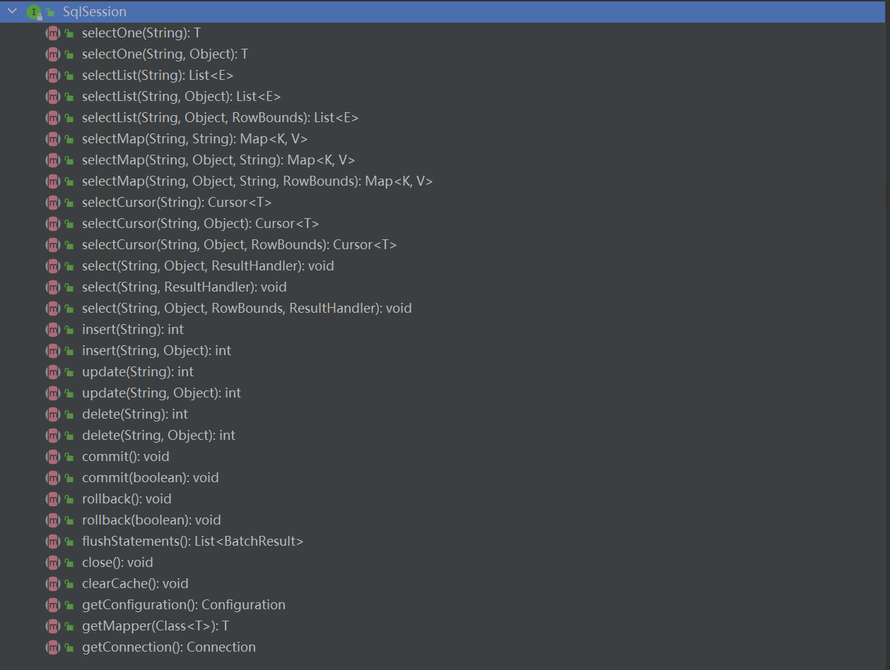
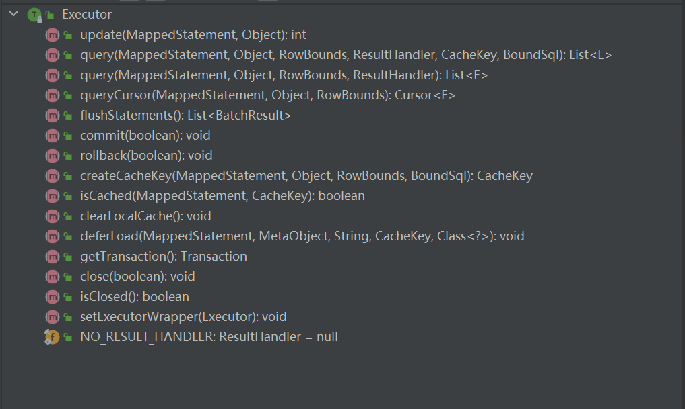
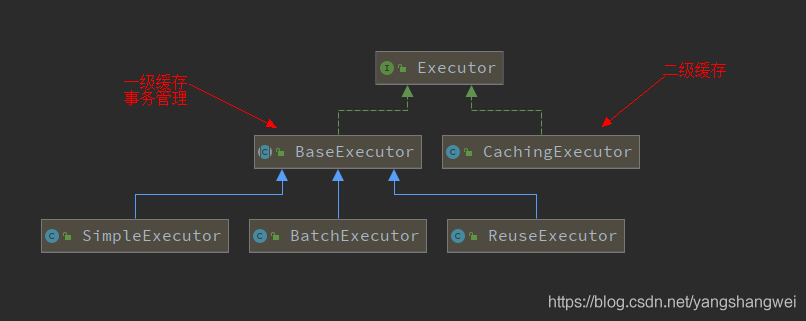
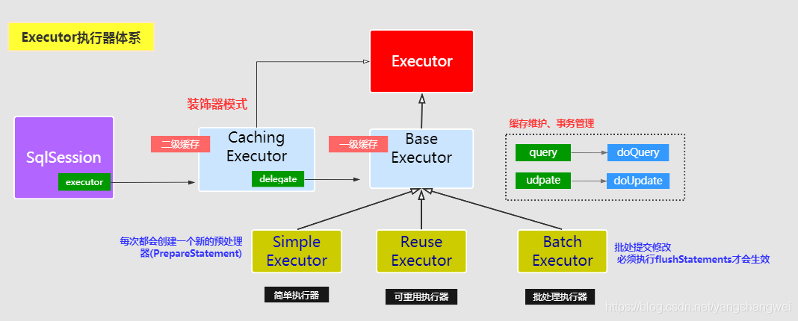
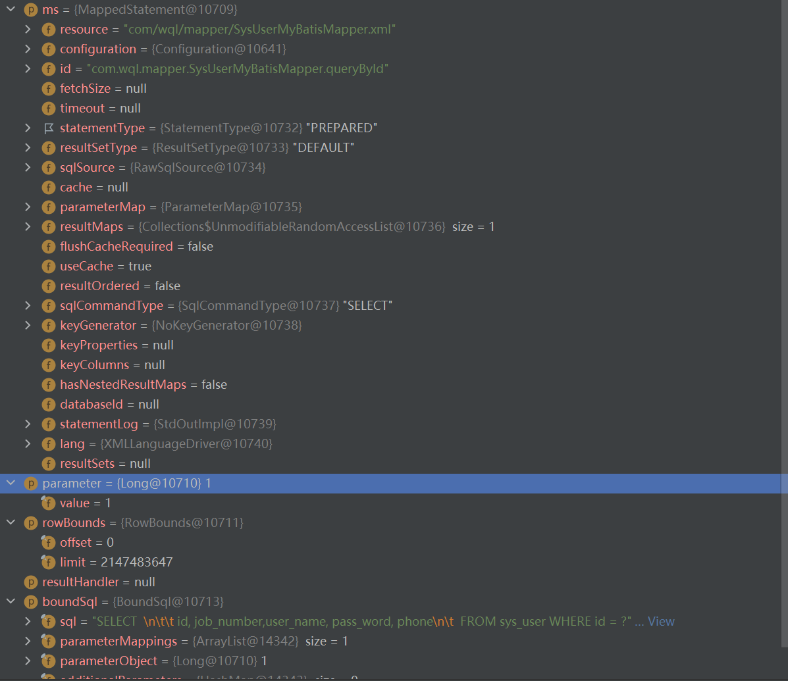

Mybatis一级缓存与二级缓存学习
MyBatis Cache
一级缓存
Mybatis默认的情况下，它只开启了一级缓存。
所以在参数和 SQL 完全一样的情况下，我们使用同一个 SqlSession 对象调用同一个Mapper 的方法，往往只执行一次 SQL，因为使用 SqlSession 第一次查询后，MyBatis 会将其放在缓存中，以后再查询的时候，如果没有声明需要刷新，并且缓存没超时的情况下.SqlSession 都只会取出当前缓存的数据，而不会再次发送Sql到数据库。
但是如果你使用的是不同的 SqlSesion 对象，因为不同的 SqlSession 都是相互隔离的，所以用相同的 Mapper、参数和方法，它还是会再次发送 SOL 到数据库去执行，返回结果。
SqlSessionFactoryUtil工具类
package com.wql.utils;
import com.wql.mapper.SysUserMyBatisMapper;
import org.apache.ibatis.datasource.pooled.PooledDataSource;
import org.apache.ibatis.mapping.Environment;
import org.apache.ibatis.session.Configuration;
import org.apache.ibatis.session.SqlSession;
import org.apache.ibatis.session.SqlSessionFactory;
import org.apache.ibatis.session.SqlSessionFactoryBuilder;
import org.apache.ibatis.transaction.TransactionFactory;
import org.apache.ibatis.transaction.jdbc.JdbcTransactionFactory;
import java.util.Objects;
public class SqlSessionFactoryUtil {
// SqlSessionFactory对象
private static SqlSessionFactory sqlSessionFactory = null;
// 类线程锁
private static final Class CLASS_LOCK = SqlSessionFactoryUtil.class;
/**
* 私有构造函数
*/
private SqlSessionFactoryUtil() {
}
public static SqlSessionFactory initSqlSessionFactory() {
synchronized(CLASS_LOCK) {
if (Objects.nonNull(sqlSessionFactory)) {
return sqlSessionFactory;
}
// 构建数据库连接池
PooledDataSource dataSource = new PooledDataSource();
dataSource.setDriver("com.mysql.cj.jdbc.Driver");
dataSource.setUrl("jdbc:mysql://localhost:3306/tudou?useUnicode=true&characterEncoding=utf8&serverTimezone=UTC&useSSL=false&allowPublicKeyRetrieval=true");
dataSource.setUsername("root");
dataSource.setPassword("");
// 构建数据库事务方式
TransactionFactory transactionalFactory = new JdbcTransactionFactory();
// 创建数据库运行环境
Environment environment = new Environment("development", transactionalFactory, dataSource);
//构建config对象
Configuration config = new Configuration(environment);
// 加入映射器
config.addMapper(SysUserMyBatisMapper.class);
sqlSessionFactory = new SqlSessionFactoryBuilder().build(config);
return sqlSessionFactory;
}
}
/**
* 打开SqlSession
*/
public static SqlSession openSqlSession() {
if (sqlSessionFactory == null) {
initSqlSessionFactory();
}
return sqlSessionFactory.openSession();
}
}
SysUserMyBatisMapper类
public interface SysUserMyBatisMapper {
SysUser queryById(Long id);
}SysUserMyBatisMapper XML
<?xml version="1.0" encoding="UTF-8" ?>
<!DOCTYPE mapper PUBLIC "-//mybatis.org//DTD Mapper 3.0//EN"
"http://mybatis.org/dtd/mybatis-3-mapper.dtd">
<mapper namespace="com.wql.mapper.SysUserMyBatisMapper">
<sql id="BaseColumn">
id, job_number,user_name, pass_word, phone
</sql>
<resultMap id="CityAreaResultMap" type="com.wql.domain.SysUser">
<id column="id" property="id"/>
<id column="job_number" property="jobNumber"/>
<id column="user_name" property="userName"/>
<id column="pass_word" property="passWord"/>
</resultMap>
<select id="queryById" resultMap="CityAreaResultMap">
SELECT <include refid="BaseColumn"/> FROM sys_user WHERE id = #{id}
</select>
</mapper>单元测试类
@Slf4j
@SpringBootTest(webEnvironment = SpringBootTest.WebEnvironment.DEFINED_PORT)
class SysUserServiceImplTest {
@Test
public void testCache() {
SqlSession sqlSession = SqlSessionFactoryUtil.openSqlSession();
SysUserMyBatisMapper sysUserMyBatisMapper = sqlSession.getMapper(SysUserMyBatisMapper.class);
SysUser sysUser = sysUserMyBatisMapper.queryById(1L);
System.out.println(sysUser);
sysUser = sysUserMyBatisMapper.queryById(1L);
System.out.println(sysUser);
}
}日志打印：
Opening JDBC Connection
Created connection 309167705.
Setting autocommit to false on JDBC Connection [com.mysql.cj.jdbc.ConnectionImpl@126d8659]
==> Preparing: SELECT id, job_number,user_name, pass_word, phone FROM sys_user WHERE id = ?
==> Parameters: 1(Long)
<== Columns: id, job_number, user_name, pass_word, phone
<== Row: 1, , 33, 33, 33
<== Total: 1
SysUser(id=1, jobNumber=, idCard=null, userName=33, passWord=33, phone=33, userStatus=null)
SysUser(id=1, jobNumber=, idCard=null, userName=33, passWord=33, phone=33, userStatus=null)只打印了一次SQL，说明使用到了Mybatis的一级缓存。
一级缓存配置
开发者只需在MyBatis的配置文件中，添加如下语句，就可以使用一级缓存。共有两个选项，SESSION或者STATEMENT，默认是SESSION级别，即在一个MyBatis会话中执行的所有语句，都会共享这一个缓存。一种是STATEMENT级别不使用一级缓存，此级别下每次执行完一个Mapper中的语句后都会将一级缓存清除。
protected LocalCacheScope localCacheScope = LocalCacheScope.SESSION; //默认配置
// 在SqlSessionFactoryUtil中加入配置
config.setLocalCacheScope(LocalCacheScope.STATEMENT);再次执行单元测试
Opening JDBC Connection
Created connection 1351814143.
Setting autocommit to false on JDBC Connection [com.mysql.cj.jdbc.ConnectionImpl@50930bff]
==> Preparing: SELECT id, job_number,user_name, pass_word, phone FROM sys_user WHERE id = ?
==> Parameters: 1(Long)
<== Columns: id, job_number, user_name, pass_word, phone
<== Row: 1, , 33, 33, 33
<== Total: 1
SysUser(id=1, jobNumber=, idCard=null, userName=33, passWord=33, phone=33, userStatus=null)
==> Preparing: SELECT id, job_number,user_name, pass_word, phone FROM sys_user WHERE id = ?
==> Parameters: 1(Long)
<== Columns: id, job_number, user_name, pass_word, phone
<== Row: 1, , 33, 33, 33
<== Total: 1
SysUser(id=1, jobNumber=, idCard=null, userName=33, passWord=33, phone=33, userStatus=null)对于SESSION级别缓存消失的情况有：
- select会被缓存
- insert ，update，delete语句会刷新缓存
- sqlSession.clearCache();手动清理缓存
在两次查询中间加入sqlSession.clearCache();
SysUser sysUser = sysUserMyBatisMapper.queryById(1L);
System.out.println(sysUser);
sqlSession.clearCache();
sysUser = sysUserMyBatisMapper.queryById(1L);
System.out.println(sysUser);日志打印：
Opening JDBC Connection
Created connection 525119867.
Setting autocommit to false on JDBC Connection [com.mysql.cj.jdbc.ConnectionImpl@1f4cb17b]
==> Preparing: SELECT id, job_number,user_name, pass_word, phone FROM sys_user WHERE id = ?
==> Parameters: 1(Long)
<== Columns: id, job_number, user_name, pass_word, phone
<== Row: 1, , 33, 33, 33
<== Total: 1
SysUser(id=1, jobNumber=, idCard=null, userName=33, passWord=33, phone=33, userStatus=null)
==> Preparing: SELECT id, job_number,user_name, pass_word, phone FROM sys_user WHERE id = ?
==> Parameters: 1(Long)
<== Columns: id, job_number, user_name, pass_word, phone
<== Row: 1, , 33, 33, 33
<== Total: 1
SysUser(id=1, jobNumber=, idCard=null, userName=33, passWord=33, phone=33, userStatus=null)打印了两次SQL
Creating a new SqlSession
SqlSession [org.apache.ibatis.session.defaults.DefaultSqlSession@2e9dcdd3] was not registered for synchronization because synchronization is not active
[TRACEID:] 2022-12-12 00:57:37.168 [main-994] INFO c.alibaba.druid.pool.DruidDataSource 994 init - {dataSource-1} inited
JDBC Connection [com.alibaba.druid.proxy.jdbc.ConnectionProxyImpl@760c777d] will not be managed by Spring
==> Preparing: SELECT id,job_number,user_name,pass_word,phone,user_status,create_date,create_user,update_date,update_user,extra_info,del_flag FROM sys_user WHERE id=? AND del_flag=1
==> Parameters: 1(Integer)
<== Columns: id, job_number, user_name, pass_word, phone, user_status, create_date, create_user, update_date, update_user, extra_info, del_flag
<== Row: 1, , 33, 33, 33, 1, 2021-12-02 23:36:44, 33, 2021-12-12 22:25:13, 33, 33, 1
<== Total: 1
Closing non transactional SqlSession [org.apache.ibatis.session.defaults.DefaultSqlSession@2e9dcdd3]
Creating a new SqlSession
SqlSession [org.apache.ibatis.session.defaults.DefaultSqlSession@70bc9070] was not registered for synchronization because synchronization is not active
JDBC Connection [com.alibaba.druid.proxy.jdbc.ConnectionProxyImpl@760c777d] will not be managed by Spring
==> Preparing: SELECT id,job_number,user_name,pass_word,phone,user_status,create_date,create_user,update_date,update_user,extra_info,del_flag FROM sys_user WHERE id=? AND del_flag=1
==> Parameters: 1(Integer)
<== Columns: id, job_number, user_name, pass_word, phone, user_status, create_date, create_user, update_date, update_user, extra_info, del_flag
<== Row: 1, , 33, 33, 33, 1, 2021-12-02 23:36:44, 33, 2021-12-12 22:25:13, 33, 33, 1
<== Total: 1
Closing non transactional SqlSession [org.apache.ibatis.session.defaults.DefaultSqlSession@70bc9070]一级缓存工作流程和源码分析

每个SqlSession中持有了Executor，每个Executor中有一个LocalCache。当用户发起查询时，MyBatis根据当前执行的语句生成MappedStatement，在Local Cache进行查询，如果缓存命中的话，直接返回结果给用户，如果缓存没有命中的话，查询数据库，结果写入Local Cache，最后返回结果给用户。

源码解析：
SqlSession： 对外提供了用户和数据库之间交互需要的所有方法，隐藏了底层的细节。默认实现类是DefaultSqlSession。

Executor： SqlSession向用户提供操作数据库的方法，但和数据库操作有关的职责都会委托给Executor。

接口继承关系


Executor 有3个子类，父类中的抽象方法doQuery就是让三个子类去重写，实现各自的功能。
简单执行器 -SimpleExecutor
简单执行器是默认的执行器。一个Statement只执行一次，执行完毕后则进行销毁。
protected ExecutorType defaultExecutorType = ExecutorType.SIMPLE;
@Override
public SqlSession openSession() {
return openSessionFromDataSource(configuration.getDefaultExecutorType(), null, false);
}@Override
public <E> List<E> doQuery(MappedStatement ms, Object parameter, RowBounds rowBounds, ResultHandler resultHandler, BoundSql boundSql) throws SQLException {
Statement stmt = null;
try {
Configuration configuration = ms.getConfiguration();
StatementHandler handler = configuration.newStatementHandler(wrapper, ms, parameter, rowBounds, resultHandler, boundSql);
stmt = prepareStatement(handler, ms.getStatementLog());
return handler.query(stmt, resultHandler);
} finally {
closeStatement(stmt);
}
}
private Statement prepareStatement(StatementHandler handler, Log statementLog) throws SQLException {
Statement stmt;
Connection connection = getConnection(statementLog);
stmt = handler.prepare(connection, transaction.getTimeout());
handler.parameterize(stmt);
return stmt;
}参数解读
MappedStatement ： 映射SQL
Object parameter ： SQL中的动态参数
RowBounds：分页用的，默认不分页 RowBounds.DEFAULT ， 可参考 org.apache.ibatis.session.RowBounds
ResultHandler： 自定义处理返回结果 ，不使用写 Executor.NO_RESULT_HANDLER
BoundSql ： 绑定的SQL

- 获取大管家 Configuration
- 每次都要newStatementHandler ，这个StatementHandler 后面我们重点将，是专门处理JDBC的
- prepareStatement –> BaseStatementHandler #prepare 方法
- 调用SimpleStatementHandler#query
相同的SQL每次调用都会预编译 ，我们期望的结果是相同的SQL只要编译一次即可，那SimpleExecutor不支持
ReuseExecutor-重用执行器
@Override
public <E> List<E> doQuery(MappedStatement ms, Object parameter, RowBounds rowBounds, ResultHandler resultHandler, BoundSql boundSql) throws SQLException {
Configuration configuration = ms.getConfiguration();
StatementHandler handler = configuration.newStatementHandler(wrapper, ms, parameter, rowBounds, resultHandler, boundSql);
Statement stmt = prepareStatement(handler, ms.getStatementLog());
return handler.query(stmt, resultHandler);
}
// 先判断本地缓存statementMap是否有数据，有的话从statementMap获取，没有的话建立Statement，并存入本地缓存statementMap // 注意这个缓存的声明周期 是仅限于本次会话。 会话结束后，这些缓存都会被销毁掉。
// 区别于SimpleExecutor的实现，多了个本地缓存。 推荐使用ReuseExecutor 。
private Statement prepareStatement(StatementHandler handler, Log statementLog) throws SQLException {
Statement stmt;
BoundSql boundSql = handler.getBoundSql();
String sql = boundSql.getSql();
if (hasStatementFor(sql)) {
stmt = getStatement(sql);
applyTransactionTimeout(stmt);
} else {
Connection connection = getConnection(statementLog);
stmt = handler.prepare(connection, transaction.getTimeout());
putStatement(sql, stmt);
}
handler.parameterize(stmt);
return stmt;
}
// 相同的SQL语句会缓存对应的PrepareStatement , 缓存的生命周期： 会话有效期
private boolean hasStatementFor(String sql) {
try {
return statementMap.keySet().contains(sql) && !statementMap.get(sql).getConnection().isClosed();
} catch (SQLException e) {
return false;
}
}ReuseExecutor虽然相同的SQL只要编译一次，但是我们日常编程中使用的是Spring-Mybatis，不使用事务的情况下，每条语句都会重新生成SqlSession，所以ReuseExecutor的一次编译失效。
BatchExecutor-批处理执行器
优点：可以向数据库发送多条不同的ＳＱＬ语句。
缺点：没有预编译，存在sql注入风险，且当sql只有参数不同时，也需要重复多次，冗余。
一级缓存源码
public abstract class BaseExecutor implements Executor {
protected PerpetualCache localOutputParameterCache;
// BaseExecutor成员变量之一的PerpetualCache，是对Cache接口最基本的实现，其实现非常简单，内部持有HashMap，对一级缓存的操作实则是对HashMap的操作。
public class PerpetualCache implements Cache {
private final String id;
private final Map<Object, Object> cache = new HashMap<>();在源码分析的最后，我们确认一下，如果是insert/delete/update方法，缓存就会刷新的原因。
SqlSession的insert方法和delete方法，都会统一走update的流程。
总结
- MyBatis一级缓存的生命周期和SqlSession一致。
- MyBatis一级缓存内部设计简单，只是一个没有容量限定的HashMap，在缓存的功能性上有所欠缺。
- MyBatis的一级缓存最大范围是SqlSession内部，有多个SqlSession或者分布式的环境下，数据库写操作会引起脏数据，建议设定缓存级别为Statement。
mybatis-spring
在MyBatis中，使用sqlsessionFactory创建一个sqlsession。但是在mybatis-spring中，我们不再需要直接使用sqlsessionFactory。而是使用SqlSessionTemplate，它实现了sqlsession，作为代码中任何现有使用sqlsession的替代品。sqlsessionTemplate是线程安全的，可以由多个DAO或Mapper共享。
官网文档：mybatis-spring官方文档
private class SqlSessionInterceptor implements InvocationHandler {
private SqlSessionInterceptor() {
}
public Object invoke(Object proxy, Method method, Object[] args) throws Throwable {
// 1.创建一个SqlSession
SqlSession sqlSession = SqlSessionUtils.getSqlSession(SqlSessionTemplate.this.sqlSessionFactory, SqlSessionTemplate.this.executorType, SqlSessionTemplate.this.exceptionTranslator);
Object unwrapped;
try {
// 2.调用原始函数
Object result = method.invoke(sqlSession, args);
// 如果不是事务，关闭当前的SqlSession
if (!SqlSessionUtils.isSqlSessionTransactional(sqlSession, SqlSessionTemplate.this.sqlSessionFactory)) {
sqlSession.commit(true);
}
unwrapped = result;
} catch (Throwable var11) {
unwrapped = ExceptionUtil.unwrapThrowable(var11);
if (SqlSessionTemplate.this.exceptionTranslator != null && unwrapped instanceof PersistenceException) {
SqlSessionUtils.closeSqlSession(sqlSession, SqlSessionTemplate.this.sqlSessionFactory);
sqlSession = null;
Throwable translated = SqlSessionTemplate.this.exceptionTranslator.translateExceptionIfPossible((PersistenceException)unwrapped);
if (translated != null) {
unwrapped = translated;
}
}
throw (Throwable)unwrapped;
} finally {
if (sqlSession != null) {
SqlSessionUtils.closeSqlSession(sqlSession, SqlSessionTemplate.this.sqlSessionFactory);
}
}
return unwrapped;
}
}如果没有添加Transactional注解的话，每次都会创建一个新的SqlSession并且在执行完毕之后，还会将事务提交、关闭SqlSession。因此多次请求之间无法通过SqlSession来共享缓存。
二级缓存
二级缓存默认是不开启的，需要手动开启二级缓存，实现二级缓存的时候，MyBatis要求返回的POJO必须是可序列化的。
<settings>
<setting name = "cacheEnabled" value = "true" />
</settings>来开启二级缓存，还需要在 Mapper 的xml 配置文件中加入 <cache> 标签
<!-- 表示表查询结果保存到二级缓存(共享缓存) -->
<cache/>设置 cache 标签的属性
cache 标签有多个属性，一起来看一些这些属性分别代表什么意义
eviction: 缓存回收策略，有这几种回收策略
LRU- 最近最少回收，移除最长时间不被使用的对象FIFO- 先进先出，按照缓存进入的顺序来移除它们SOFT- 软引用，移除基于垃圾回收器状态和软引用规则的对象WEAK- 弱引用，更积极的移除基于垃圾收集器和弱引用规则的对象
默认是 LRU 最近最少回收策略
flushinterval缓存刷新间隔，缓存多长时间刷新一次，默认不清空，设置一个毫秒值readOnly: 是否只读；true 只读，MyBatis 认为所有从缓存中获取数据的操作都是只读操作，不会修改数据。MyBatis 为了加快获取数据，直接就会将数据在缓存中的引用交给用户。不安全，速度快。读写(默认)：MyBatis 觉得数据可能会被修改size: 缓存存放多少个元素type: 指定自定义缓存的全类名(实现Cache 接口即可)blocking： 若缓存中找不到对应的key，是否会一直blocking，直到有对应的数据进入缓存。
二级缓存失效的条件
- 第一次SqlSession 未提交
SqlSession 在未提交的时候，SQL 语句产生的查询结果还没有放入二级缓存中，这个时候 SqlSession2 在查询的时候是感受不到二级缓存的存在的
- 更新对二级缓存影响
同一个命名空间下的更新操作会使二级缓存失效
多表操作对二级缓存的影响
多表查询更新跨命名空间极大可能会出现脏数据。使用
<cache-ref>来把一个命名空间指向另外一个命名空间，从而消除上述的影响
总结：
- MyBatis的二级缓存相对于一级缓存来说，实现了
SqlSession之间缓存数据的共享，同时粒度更加的细，能够到namespace级别，通过Cache接口实现类不同的组合，对Cache的可控性也更强。 - MyBatis在多表查询时，极大可能会出现脏数据，有设计上的缺陷，安全使用二级缓存的条件比较苛刻。
- 在分布式环境下，由于默认的MyBatis Cache实现都是基于本地的，分布式环境下必然会出现读取到脏数据，需要使用集中式缓存将MyBatis的Cache接口实现，有一定的开发成本，直接使用Redis、Memcached等分布式缓存可能成本更低，安全性也更高。
引用